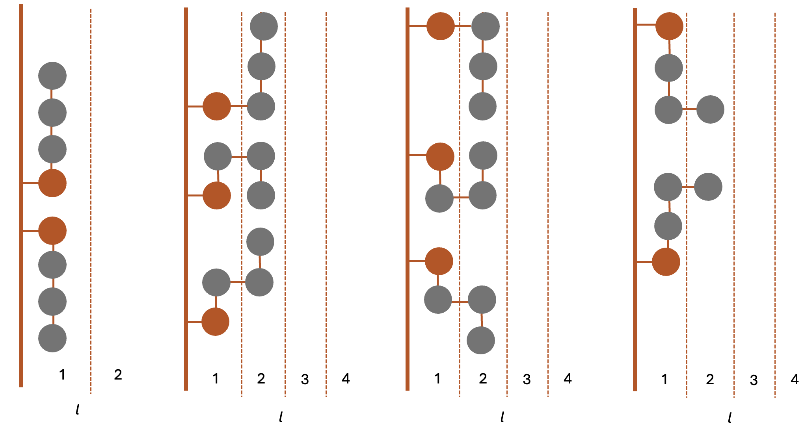
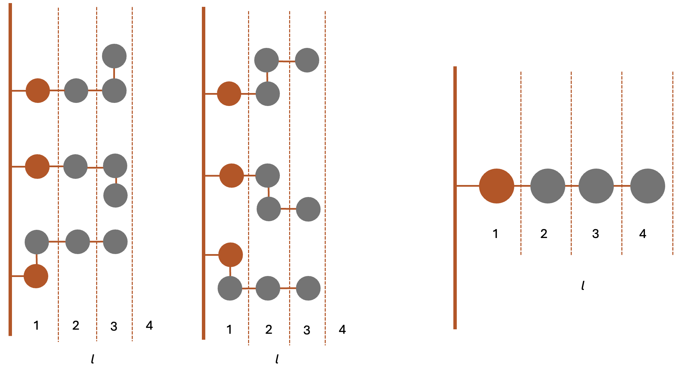
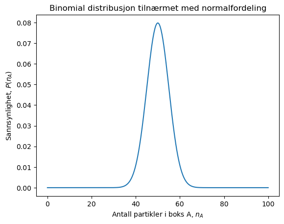

Uke 1 – Statistisk mekanikk og mikro–makro-sammenhengen#
Diskusjonsoppgaver#
Oppgave 1#
a) En makrotilstand beskriver systemet med makroskopiske størrelser vi kan måle, for eksempel temperatur, trykk, volum eller total energi. En mikrotilstand er én bestemt, fullstendig mikroskopisk beskrivelse innenfor modellen. Mange forskjellige mikrotilstander kan gi samme makrotilstand.
b) Multiplisiteten til et system er antallet mulige måter ulike utfall kan forekomme. Typisk i kurset her vil dette være antallet måter vi kan fordele energien mellom partikler på for at den totale energien skal ha en gitt verdi.
c) Multiplisitet og sannsynlighet er tett knyttet sammen. Sammensetningen med høyest multiplisitet vil også være den mest sannsynlige.
d) Når vi snakker om distinguishable og indistinguishable partikler skiller vi mellom situasjoner hvor vi kan vite nøyaktig posisjon til hver bestemt partikkel - og dermed unikt identifisere hver partikkel (distinguishable), og situasjoner hvor det er umulig å skille mellom partiklene/ikke kan spores individuelt.
Oppgave 2#
I det minste volumet (3) bokser er det kun én mulig måte å fordele kulene på. Dermed er multiplisitenen \(\Omega(3 bokser)=1\). For de to neste tilfellene kan vi enten tegne opp og telle alle mulighetene, eller vi kan bruke kombinatorikk:
\(\Omega(N,M)=\frac{M!}{N!(M-N)!}\)
For tilfellet \(M=4\) får vi: \(\Omega(3,4)=\frac{4!}{3!1!}=\frac{4\cdot3\cdot2\cdot1}{3\cdot2\cdot1}=\frac{4}{1}=4\)
Og for \(M=5\): \(\Omega(3,5)=\frac{5!}{3!2!}=\frac{5\cdot4\cdot3\cdot2\cdot1}{3\cdot2\cdot1\cdot2\cdot1}=\frac{5\cdot4}{2}=10\)
Multiplisiteten øker altså når volumet øker. Hvis systemet kun kan befinne seg i disse volumene, så er sannsynligheten for at kulene/molekylene begrenser seg til et volum på 3 bokser \(p(3\text{ bokser}) = \frac{1}{1+4+10}=\frac{1}{15}\). Sannsynligheten for at de fordeler seg på et volum tilsvarende 4 bokser er \(p(4\text{ bokser}) =\frac{4}{15}\), og \(p(5\text{ bokser}) =\frac{10}{15}=\frac{2}{3}\). Sannsynligheten for at partiklene sprer seg utover er altså mye større enn sannsynligheten for at de befinner seg i et lite volum, og det er dette som ligger bak den kraften vi kjenner som trykk.
Oppgave 3#
Hvis vi antar at hver sekvens av oransje/grå partikler er like sannsynlig, er det kun multiplisiteten av sammensetningen (antall av hver farge på høyre og venstre side) som bestemmer hvilken situasjon som er mest sannsynlig. Siden vi må vurdere de to sidene separat kan vi ta produktet av mutliplisitetene for hver side for å finne den totale multiplisiteten. Dette er fordi for hver unike sekvens på venstre side kan du ha alle de mulige sekvensene med det gitte antallet oransje/grå kuler på motsatt side. Vi gir de tre makrotilstandene i figuren navn A, B og C (fra toppen og nedover).
For situasjonen med alle oransje på venstre side og alle grå på høyre, er det igjen bare én måte å oppnå denne mikrotilstanden på: \(\Omega(A)=\Omega(venstre)\cdot\Omega(høyre)=\frac{4!}{0!4!}\cdot\frac{4!}{4!0!}=1\)
For situasjon B får vi:
\(\Omega(B)=\Omega(venstre)\cdot\Omega(høyre)=\frac{4!}{1!3!}\cdot\frac{4!}{3!1!}=16\)
Og for situasjon C:
\(\Omega(C)=\Omega(venstre)\cdot\Omega(høyre)=\frac{4!}{2!2!}\cdot\frac{4!}{2!2!}=36\)
Vi ser at situasjon C, hvor partiklene er jevnest fordelt, har den høyeste multiplisiteten og er dermed den mest sannsynlige makrotilstanden. Uansett hvor mange bokser vi legger til vil sitasjonen hvor partiklene er separert (A), alltid ha \(\Omega=1\), og dermed bli mer og mer usannsynlig jo større systemet vårt blir. I praksis ser vi dette som tendensen partikler har til å blande seg (diffusjon).
Oppgave 4#
For å finne multiplisitetene for denne polymeren må vi tegne opp de ulike konformasjonene:


Multiplisitetene blir altså:
\(\Omega(l=1)=2\)
\(\Omega(l=2)=8\)
\(\Omega(l=3)=6\)
\(\Omega(l=4)=1\)
Denne enkle modellen viser at polymerer har en tendens til å befinne seg i en delvis foldet tilstand, heller enn å være helt strukket eller å ligge flatt langs en overflate.
Oppgave 5#
La oss se på system A først. Fordi systemet kun består av to energi-nivå kan vi bruke binomial kombinatorikk for å finne multiplisitetene.
\(\Omega(A) = \frac{10!}{2!8!}=45\)
\(\Omega(B) = \frac{10!}{4!6!}=210\)
Dersom system A og B ikke er i termisk likevekt vil den totale multiplisiteten være
\(\Omega_{tot}=\Omega(A)\cdot\Omega(B)=45\cdot210=9450\).
Vi antar nå at systemene kan utveksle varme, slik at det innstiller seg en likevekt hvor \(U_A=U_B=3\). Den totale multiplisiteten blir da
\(\Omega_{tot}=\Omega(A)\cdot\Omega(B)=\frac{10!}{3!7!}\cdot \frac{10!}{3!7!}=14400\).
Hvis vi bruker prinsippet om maksimal multiplisitet ser vi at det er mest sannsynlig at systemene utveksler energi slik at den ender opp likt fordelt.
Vi kan også ta for oss det motsatte tilfellet, at vi senker energien til det ene systemet og øker energien til det andre, \(U_A = 1\) og \(U_B=5\).
\(\Omega_{tot}=\Omega(A)\cdot\Omega(B)=\frac{10!}{1!9!}\cdot \frac{10!}{5!5!}=2520\).
Denne situasjonen er altså langt mindre sannsynlig.
Regneoppgaver#
Oppgave 6#
a) Multiplisiteten er antall måter vi kan velge hvilke \(n_A\) av de fem partiklene som er i A:
\(n_A\) |
\(0\) |
\(1\) |
\(2\) |
\(3\) |
\(4\) |
\(5\) |
|---|---|---|---|---|---|---|
\(\Omega(n_A)\) |
\(1\) |
\(5\) |
\(10\) |
b) Fordelingen av mikrotilstander vil være symmetrisk om forventningsverdien siden alle mikrotilstander er like sannsynlige. Det vil si at tilstanden med f.eks. 3 partikler i A og 2 i B vil tilsvare den motsatte tilstanden med 3 i B og 2 i A, og begge vil være like sannsynlige (samme multiplisitet).
\(n_A\) |
\(0\) |
\(1\) |
\(2\) |
\(3\) |
\(4\) |
\(5\) |
|---|---|---|---|---|---|---|
\(\Omega(n_A)\) |
\(1\) |
\(5\) |
\(10\) |
\(10\) |
\(5\) |
\(1\) |
c)
Hver partikkel kan være i enten boks A eller boks B. Det gir to muligheter for hver av fem partikler:
Det finnes altså 32 mikrotilstander. Dette kan også vises ved å summere antallet mikrotilstander funnet i oppgavene over.
Sannsynligheten for \(n_A=5\) er
og sannsynligheten for 3 i A er
d)
I den binomiske sannsynligheten \(P(n_A)=\binom{N}{n_A}p^{n_A}(1-p)^{N-n_A}\) er leddet \(p^{n_A}(1-p)^{N-n_A}\) sannsynligheten for å få en gitt sammensetning av “ønskede” og “uønskede” utfall. Siden vi ser på en binomisk fordeling har vi kun to mulige utfall, som i vårt tilfelle er at en partikkel enten er i boks A eller i boks B, der det “ønskede” utfallet er boks A. Ser man på kun én partikkel, og med antakelsen om at begge boksene er like sannsynlige, vil vi ha at \(p=\frac{1}{2}\) (implisitt \(p(\text{partikkel i A})\)). Sannsynligheten for at den neste partikkele også havner i A vil da være gitt ved \(p = \frac{1}{2}\cdot \frac{1}{2}\), eller mer generelt vil sannsynligheten for at \(n_A\) partikler havner i A rett etter hverandre være \(p^{n_A}\). Tilsvarende vil sannsynligheten for \(N-n_A\) partikler i B rett etter hverandre være \((1-p)^{N-n_1}\). Oppsummert kan vi si at \(p\) er sannsynligheten for at en partikkel havner i boks A, det “ønskede” utfallet vårt, og at \(p^{n_A}(1-p)^{N-n_A}\) er sannsynligheten for én konkret rekkefølge hvor \(n_A\) er i A.
Binomialkoeffisienten \(\binom{N}{n_A}\) gir antallet måter vi kan fordele \(n_A\) partikler i A på når posisjonene er skillbare, og leddet \(p^{n_A}(1-p)^{N-n_A}\) gir sannsynligheten for én bestemt rekkefølge, som i vårt tilfelle er \(p^{n_A}(1-p)^{N-n_A}=\frac{1}{2}^3\cdot \frac{1}{2}^2=\frac{1}{32}\).
e) For \(n_A=3\) får vi
f) Når \(N\) øker, blir fordelingen relativt smalere og mer konsentrert rundt den jevne fordelingen.
g) For et makroskopisk system med \(N\sim10^{23}\) blir relative fluktuasjoner ekstremt små. Systemet ser derfor ut til å ha stabile makroskopiske egenskaper selv om mikrotilstanden hele tiden endrer seg. Ekstreme fordelinger er ikke umulige, men sannsynligheten for dem er forsvinnende liten.
Oppgave 7#
Med \(U_{tot}=4\) kan vi ha \(U_A=0,U_B=4\), \(U_A=1,U_B=3\), \(U_A=U_B=2\).Vi kan også ha de motsatte tilfellene, men siden de gir akkurat samme multiplisitet trenger vi ikke regne ut de eksplisitt.
For \(U_A=0,U_B=4\):
\(\Omega_{tot}=\Omega(A)\cdot\Omega(B)=\frac{10!}{0!10!}\cdot\frac{10!}{4!6!}=210\)
For \(U_A=1,U_B=3\):
\(\Omega_{tot}=\Omega(A)\cdot\Omega(B)=\frac{10!}{1!9!}\cdot\frac{10!}{3!7!}=1200\)
For \(U_A=2,U_B=2\):
\(\Omega_{tot}=\Omega(A)\cdot\Omega(B)=\frac{10!}{2!8!}\cdot\frac{10!}{2!8!}=2025\)
Igjen ser vi at den fordelingen som gir høyest multiplisitet er fordelingen som deler energien likt mellom de to del-systemene. Dette er rimelig fordi sannsynligheten for at en partikkel befinner seg i en eksitert tilstand er like stor i begge delsystemene, og begge delsystemene har samme antallet partikler.
Oppgave 8#
a)
Vi bruker binomialfordelingen:
Hvor \(n_A\) er antall partikler i A, og N er antal partikler totalt, og \(p\) er sannsynligheten for at en partikkel er i boks a. Siden p=1/2, altså at det er lik sannsynlighet for A og B. forenkles formelen til:
Fyller vi inn \(N=4\) og \(n_A=4\) (alle partikler i A) får vi:
Vi forventer dermed at alle partiklene er i A 1/16 av tiden.
b)
For \(N=100\) og \(n_A=100\) får vi
Altså er sannsynligheten for å finne alle partiklene i A være omtrent null!
c)
Sannsynligheten for at partiklene her helt likt fordelt mellom A og B, altså at det er akkurat 50 i hver er gitt ved samme binomialformel, med \(n_A=50\):
Her vil mange kalkulatorer begynne å slike med å regne ut \(\frac{100!}{(100-50)!50!}=1.0089\cdot10^{29}\) Det er mulig i python, men selv det blir vanskelig med litt større tall. Så en god strattegi her er å bruke tilnærmingen om at binominalfordelingen kan tilnermes med en normalfordeling hvis N er stor.
Normalfordelingen er gitt ved:
der \(\mu=N\cdot p=100\cdot 1/2=50\) er middelverdien og \(\sigma^2=N\cdot p\cdot (1-p)=100\cdot 1/2 \cdot 1/2=100/4=25\) er variansen. Plugger vi inn disse tallene i normalfordelingen får vi at:
Som er en veldig god tilnærming.
Dette svaret er kanskje litt overaskende, at sannsynsligheten for 50-50, som vi kan forvente å være den mest sannsynlige fordelingen, er kun \(p(n_A=50)\approx 8 \% \).
Men hvis vi plotter normalfordelingen, som vi har gjort under, så ser vi at distribusjonen er sentrert rundt \(n_A=50\) og at nest hele fordelingen ligger mellom \(n_A=40\) og \(n_A=60\). En egenskap ved normalfordelingen er at det er \(68.2 \%\) sannsynlig at \(n_A\) er mellom \(\mu \pm \sqrt{\sigma^2}=\mu \pm \sigma=50 \pm 5\), alstså fra 45-55.
Sannsynligheten for å få akkurat 50-50 er liten, men å sannsynligheten for å få noe rundt det, er veldig stor!
import numpy as np
import matplotlib.pyplot as plt
def gauss(x,mu,sigma):
y = 1/np.sqrt(2*np.pi*sigma**2)*np.exp(-(x-mu)**2/(2*sigma**2))
return y
N=100
p=0.5
mu=N*p
sigma=np.sqrt(N*p*(1-p))
x=np.linspace(0,100,500)
y_list=gauss(x,mu,sigma)
plt.plot(x,y_list)
plt.title('Binomial distribusjon tilnærmet med normalfordeling')
plt.xlabel(r'Antall partikler i boks A, $n_A$')
plt.ylabel(r'Sannsynlighet, $P(n_A)$')
plt.show()

d)
Den orasnje linjen viser normalfordelingen vi kan forvente for store N, som vi har definert og plottet i svaret til oppgave c.
e) Vi forventer at det stemmer bedre og bedre når vi øker N, siden sannsynligheten for ekstreme fordelinger (alt i en boks) blir mindre og mindre.
f) Ved likevekt slutter ikke atomene å bevege seg, og fordelingen er ikke fast på 50%-50%. Men vi ser at fordelingen svinger fram og tilbake rundt dette. En annen måde å se det på er at når vi er langt unna likevekt, som rett etter at vi åpner barieren, vil vi se en netto bevegelse mot gjevnere fordeling. Ved likevet har vi ikke noe netto bevegelse over tid.
Oppgave 9#
a) Når antallet partikler er \(k\) og antallet bokser er \(N\), så er sannsynligheten \(p\) for at en tilfeldig valgt boks ineholder en partikkel:
som er antall gunstige delt på antall mulige. Den mootsatte sannsynligheten, for at en tilfeldig valgt boks ikke inneholder en partikkel er gitt ved:
\(p(tom)=(1-p)=1-\frac{k}{N}=\frac{N-k}{N}\)
b) Bruker Stirlings approksimasjon på formen \(x!\approx (x/e)^x\), og skriver om
\(\Omega=\frac{N!}{k!(N-k)!}\approx \frac{(N/e)^N}{(k/e)^k\cdot((N-k)/e)^{(N-k)}}\)
Ved å faktorere ut \(1/e\) kan vi videre skrive
\(\Omega=\frac{N^N(\frac{1}{e})^N}{k^k(\frac{1}{e})^k(N-k)^{(N-k)}(\frac{1}{e})^{(N-k)}}=\frac{N^N(\frac{1}{e})^N}{k^k(N-k)^{(N-k)}(\frac{1}{e})^{(N-k)+k}}\)
Vi kan da stryke \((\frac{1}{e})^N\) over og under brøkstreken:
\(\Omega=\frac{N^N}{k^k(N-k)^{(N-k)}}\)
Fra oppgave a har vi at \(p=k/N\) og \(p(tom)=(1-p)=(N-k)/N\). Vi vet også at utrykket vi skal ende opp med har \(1\) i teller, og vi deler derfor på \(N^N\) i både teller og nevner:
\(\Omega=\frac{N^N}{k^k(N-k)^{(N-k)}}\cdot \frac{\frac{1}{N^N}}{\frac{1}{N^N}}\)
Vi vet også at vi kan skrive \(N=N-k+k\), så i nevneren kan vi bruke \(\frac{1}{N^N}=\frac{1}{N^{N-k+k}}=\frac{1}{N^kN^{(N-k)}}\). Setter dette inn i uttrykket for multiplisiteten og får
\(\Omega=\frac{N^N}{k^k(N-k)^{(N-k)}}\cdot \frac{\frac{1}{N^N}}{\frac{1}{N^kN^{(N-k)}}}=\frac{1}{(\frac{k}{N})^k(\frac{N-k}{N})^{(N-k)}}\)
Bruker at \(p=k/N\) og \((1-p)=(N-k)/N\):
Som er det vi skulle vise.
ekstra Framgangsmåten får å komme til Gibbs entropi fra multiplisiteten når vi har mer en to tilstander er veldig lik metoden vi brukte over. Vi begynner igjen med sterlings approximasjon
igjen kan vi faktorisere ut \(1/e\) slik at vi får:
Vi bruker så at \( p_i=n_i/N \) og som før deler vi både oppe og nede på \( N^N \), som gir oss:
Vi tar så logaritmen på begge sider:
Vi kan dele begge sider på antall partikler N:
Nå er vi nesten i mål. Hvis vi deler Boltzmanns utrykk for entropi \(S_{tot}=k_B\cdot \ln{(\Omega)}\) på \(k_B\) på begge sider får vi:
Som er det vi har på venstresiden av utrykke vi kok fram til, dermed:
For å få svaret på samme form som i oppgaven må vi fram til entropien per partikkel, så vi deler vi på N partikler.